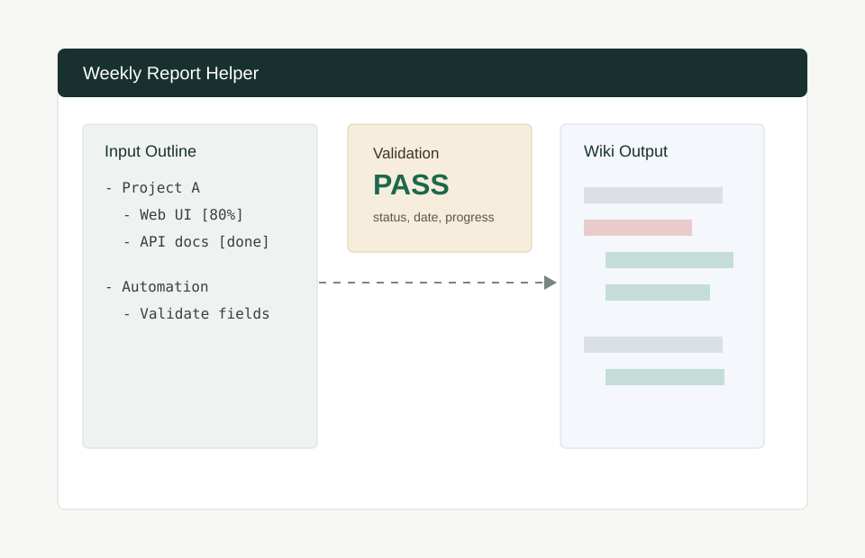

Python Automation
Redmine/GitLab 주간보고 자동화
업무 outline을 Redmine wiki 주간보고 형식으로 변환하고, 상태/진행률/날짜 누락을 검증하며, GitLab 커밋 이력을 보고 후보로 정리하는 자동화 도구입니다.
- Markdown outline to wiki body
- Redmine API publish flow with preview and validation
- GitLab commit summary candidates
Python · Redmine API · GitLab API · PowerShell